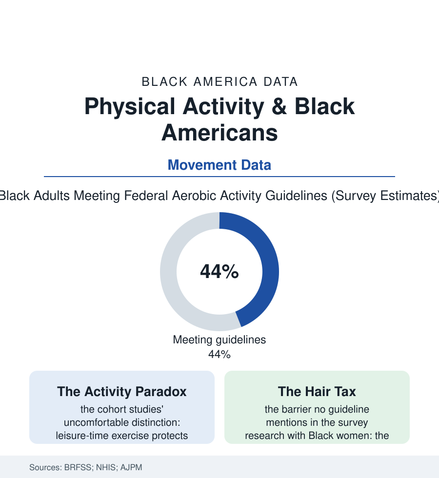

Black Public Health
The Movement File: Physical Activity in the Federal Data
The guidelines say 150 minutes a week. The activity data show who gets them, who works too physically to need them, and why the two kinds of movement are not the same. The movement file.

The federal prescription is famous: a hundred and fifty minutes a week of moderate activity, muscle-strengthening twice. The surveillance systems then count who fills it — and the Black American numbers split in a way that contains the whole file's argument: leisure-time activity running below the national line, while occupational exertion runs far above it. This article reads the movement file.
Two Kinds of Exertion
The survey arithmetic first: Black adults report meeting the aerobic guidelines at rates in the mid-forties percent in the recent federal cuts — below the national figure, the gap widest among women, the no-leisure-time-activity row (the share reporting literally none in the past month) running near a third in the BRFSS state maps of the deep South. Then the accelerometers correct the self-reports in an interesting direction — the device-measured studies shrinking everyone's numbers (the guideline attainment collapsing to single digits under the wrist's honest count in the NHANES device cycles) while preserving the ordering. And then the file's central complication arrives from the employment data: this population's work is physical — the warehouse, the grounds, the ward, the line of the employment file burning exertion the surveys classify as labor and exclude from the activity ledger — and the cohort research on the 'physical activity paradox' delivers the uncomfortable verdict that the two exertions are not fungible in the body (leisure exercise, chosen and recovered from, protecting the heart in the outcome data; occupational exertion, imposed at pace without recovery, associating in several large cohorts with no such protection or worse) — a finding whose fairness the reader may judge personally: the body keeps two ledgers the guidelines count as one. The barrier literature fills the leisure side's explanation without resorting to character: the time file's arithmetic (the care hours, the commute, the second job), the built environment's audit (the park file's maintenance, the sidewalk and lighting inventories of the neighborhood data, the traffic the walking route must negotiate), the safety perception surveys, the gym's price and its culture, and the deterrent the intervention studies documented with unusual specificity — the hair: the workout's destruction of the straightened style's investment, priced in money and salon hours in the studies of Black women's exercise barriers, a barrier so concrete that the successful interventions (the walking groups, the low-sweat formats, the hair-preserving schedules) simply designed around it and published the attendance to prove the point.
What Moves the Numbers
The intervention data's successes share a shape this atlas recognizes: they are social and they are near. The walking groups' trials (the church-based and neighborhood walking programs posting the adherence the clinic prescriptions never achieve — the faith file's infrastructure again the delivery system, the group walk converting the park from a statistic into a destination), the dance formats (the line-dancing and gospel aerobics classes whose retention data humiliate the gym's), the daughter-and-mother designs of the family studies, the worksite programs that meet the shift worker inside her schedule rather than lecturing it. The policy rows operate at the environment's level: the complete-streets and park-equity investments of the city files, the school PE of the recess file rebuilding the population's movement literacy at the source, the joint-use agreements opening the schoolyard after hours in the districts that sign them (the facilities file's locked gates unlocked by paperwork). The file's own metric of success is written in the surveillance trend: the Black no-leisure-activity share has narrowed across the BRFSS decades as the walking infrastructure and the culture of the group workout compounded — slow, unphotogenic, and real. Movement, the data conclude, is not a knowledge problem in this population; it is a time, place, and company problem — and the interventions that solve for those three words are the ones still standing in the follow-up data, walking, together, at the pace the studies prescribed all along.
Reading the Activity Data
The movement file's verdict refuses the simple headline twice: the population that 'exercises least' works hardest, and the prescription that ignores the difference prescribes leisure to people whose deficit is not effort but recovery, company, and a safe lit mile. The surveys publish both ledgers. The walking groups — out at dawn in every city of this atlas — have already reconciled them.
More in Black Public Health
Hypertension Among Black Adults: Prevalence, Control, and Consequences
About 55 percent of Black adults have hypertension — the highest rate of any U.S. group. Prevalence, onset, control, and the stroke, heart, and kidney consequences in the data.
Diabetes Among Black Adults: Prevalence and Complications
Nearly one in five Black adults has diabetes, diagnosed or undiagnosed — and its complications fall with particular weight. The CDC data on prevalence, control, and outcomes.
Black Life Expectancy: The Gap at Birth and Its Causes
Black life expectancy at birth is about 73 years, roughly five years below the national figure — the summary measure of every health gap in this section. The CDC data.
Source: Behavioral Risk Factor Surveillance System (BRFSS); National Health Interview Survey; American Journal of Preventive Medicine activity research; CDC physical activity data.